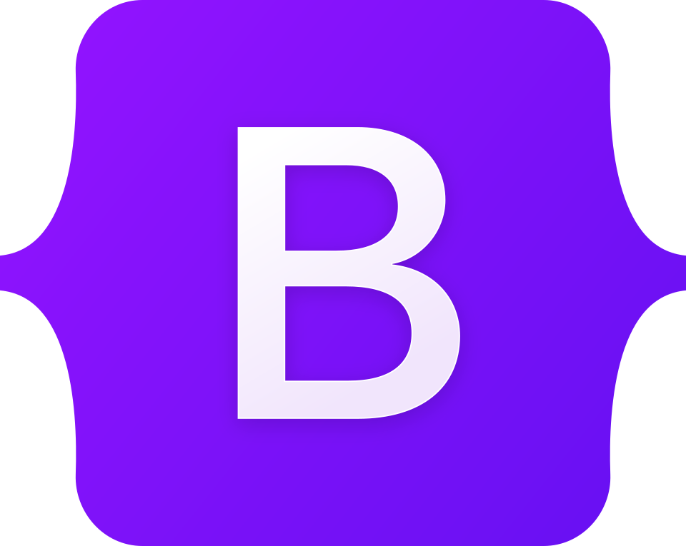
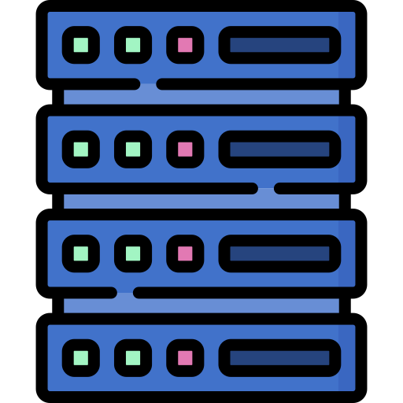

HTML
Linguagem de marcação utilizada para estruturar páginas web.

CSS
Linguagem responsável pela estilização e aparência visual das páginas web.

JavaScript
Linguagem de programação utilizada para adicionar interatividade aos sites.

Bootstrap
Framework CSS que facilita a criação de interfaces responsivas.

API
Conjunto de regras que permite a comunicação entre diferentes sistemas.
Banco de Dados
Sistema utilizado para armazenar, organizar e recuperar informações.

Servidor
Computador ou sistema responsável por fornecer serviços e dados a outros dispositivos.
Hospedagem
Serviço que disponibiliza um site na internet para acesso dos usuários.
Domínio
Nome utilizado para localizar um site na internet.
Responsividade
Capacidade de um site se adaptar a diferentes tamanhos de tela.

Framework
Conjunto de ferramentas e padrões que agilizam o desenvolvimento de software.
Front-end
Parte visual de um sistema com a qual o usuário interage diretamente.

Back-end
Parte responsável pelas regras de negócio, banco de dados e processamento.
Git
Sistema de controle de versão utilizado para gerenciar alterações em projetos.

GitHub
Plataforma online utilizada para armazenar e compartilhar projetos Git.